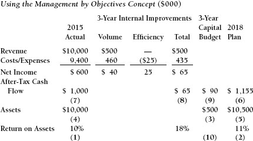

CHAPTER TEN

Return on Investment
An investment is an exposure of cash that has the objective of producing cash inflows in the future. The worthiness of an investment is measured by how much cash the investment is expected to generate compared with how much investment is required.
The analysis of return on investment is a financial forecasting tool that assists the business manager in evaluating whether a proposed investment opportunity is worthwhile, given the context of the company’s business objectives and financial constraints.
What Is Analyzed?
The investments to be analyzed have some of the following characteristics:
- A major amount of money is involved.
- The financial commitment is for more than one year.
- Cash flow benefits are expected to be achieved over many years.
- The strategic direction of the company may be affected.
- The company’s prosperity may be significantly affected by making—or not making—the investment.
Why Are These Opportunities Analyzed So Extensively?
Investment decisions should be analyzed carefully because such analysis assists the decision-making process. These decisions are irreversible, have long-term strategic implications, provide considerable uncertainty as to their success, and involve serious financial risk.
Forecasting the future performance of a proposed investment requires the analyst to identify all of the issues and effects, both positive and negative, associated with the investment. While this does not eliminate risk, it does produce a more intelligent, better informed decision-making process. Facts and expectations based upon research and strategic thinking are incorporated into the forecast. The results of the financial analysis do not make the decision. People make decisions based upon the best available information. A capital expenditure requires significant funds and corporate commitment. It is vital that these decisions be well informed.
Irreversible
Operating decisions, such as scheduling some overtime or purchasing larger amounts of raw materials, can be changed if the environment or circumstances change. Adjustments can also occur when it becomes obvious that a mistake was made. With these decisions, the need for correction can be readily determined, and the correction can be implemented soon thereafter, with minimal financial penalty. A capital expenditure decision, such as the purchase of machinery, can also be changed. In this case, however, the financial penalty can be substantial. Having installed equipment sit idle because customer orders dried up or never materialized can be severely damaging. Changes in customer preferences that are not recognized before assets are purchased and installed can be even more damaging if the company cannot or is unwilling to admit the mistakes and take corrective actions. The discipline of analysis and forecasting should minimize the occurrence of this type of event.
Long-Term Strategic Implications
Locating an operation in a certain part of the country or the world, building a factory in a certain configuration, and deciding what kind of machines are needed and how many are all decisions that will affect the way the company conducts its business for many years to come. These decisions may very well contribute to the company’s future prosperity, or the absence of it. Companies have experienced all of the following problems:
- Depletion of critical raw materials
- Termination of rail transportation service
- Manpower and/or skills shortages
The discipline of the forecasting process forces companies to identify, evaluate, and resolve these risks and vulnerabilities.
Uncertainty
Predicting the future is becoming more complex for businesses. Markets, customers, competitors, and technology have made the need for strategic discipline more critical than ever before. This becomes even more difficult when you add global sourcing; economic turmoil; the growth of China, Brazil, and India; and communications advances that make us all one major marketplace.
Technology has caused additional complexity in developing competitive strategy. Few if any retailers considered Amazon a competitive threat twenty years ago. Today, few independent booksellers remain afloat, and Barnes and Noble is suffering. Most companies that print checks for bank customers never contemplated online bill payment. How often do you turn to a new checkbook? Once or twice a year? Most newspaper companies have had to separate content from delivery of information. Do you still have a paper delivered to your door? Newsweek Magazine, once a prominent player in weekly magazines, has disappeared from your dentist’s waiting room and now distributes its content solely on its website.
Financial Exposure
In addition to the uncertainties and risks involved, the sheer amount of funds involved in a major investment requires that all available facts and issues be identified and evaluated. If additional debt is directly or indirectly involved, the analytical process becomes even more critical. Involving banks or other sources of external financing is often very helpful. Despite current economic events, banks are risk-averse businesses. They will not lend money unless they are convinced of the merits of the proposed investment. Lenders often protect their clients by identifying risks that the clients have not identified or have underemphasized. In this situation, the forecast becomes a selling document as well as a decision-making tool.
Discounted Cash Flow
The financial tool that is used to evaluate investment opportunities is called discounted cash flow (DCF). The different measurements used to evaluate investment opportunities that use this tool in some way are:
- Internal rate of return
- Net present value
- Profitability index
- Payback period
The types of investments that can be evaluated with this tool
- Capital expenditures
- Research and development
- Major advertising and promotional efforts
- Outsourcing alternatives
- Major contract negotiations (price, payment terms, duration, specifications)
- Evaluating new products and businesses
- Buying another business
- Strategic alliances
- Valuing real estate
Let’s start out by identifying a number of key conceptual premises of DCF.
0 means period zero, or the starting point of the project.
1 means one year from the start of the project.
2 means two years from the start of the project, and so forth.
A simple example is:
0. ($1,000) cash outflow (represented within parentheses)
1. $1,020 cash inflow
This is a profitable investment because the cash inflow exceeds the cash outflow—but only by $20 (2 percent). This is not a particularly attractive investment, therefore, because if the money were put in a local bank, the return might be 5 percent:
0. ($1,000)
1. $1,050
The bank deposit is also risk free because the deposit is insured by the FDIC.
Therefore, we have already established three basic principles of DCF:
1. It is measuring profitability.
2. Risk issues are incorporated into the analysis.
3. There is an opportunity cost. Projects are judged against alternatives.
Profit $ = Interest $
Now consider the following financial relationship:
0. ($1,000)
1. $1,200
If this were a stock purchase and sale one year later, the profit would be $200. If this were a bank loan, where you borrowed $1,000 and repaid $1,200 after a year, the bank’s profit (interest) would obviously be $200.
These are the same concepts; the only differences are semantic.
ROI % = Interest %
The return on investment (ROI) on the stock purchase and sale would be 20 percent. The interest rate on the loan would also be 20 percent, as follows:
The interest rate is the annual fee that the banker charges for the loan. The ROI is the annual “fee” (ROI requirement) that we impose on an investment.
Annual Concept
Consider the following:
0. ($1,000)
2. $1,200
While the dollar amount of interest and profit remained at $200, the ROI and the interest rate declined to approximately 10 percent. Therefore, ROI and interest rate are annual concepts.
Time Value of Money Concept
Discounted cash flow is based upon the time value of money concept. What this means is that not only do we value how much cash flow is generated, but we are also very concerned with when it is received. Sooner is better. The faster the cash flow is received, the sooner it can be reinvested.
Principal First
The following two investments are not the same:
| A | B | ||
| 0. ($1,000) | ($1,000) | ||
| 1. $1,200 | $ 200 | ||
| 2. | $ 200 |
Notice that the ROI in alternative B is negative. In fact, the figures for alternative B show a loss of $600. For an ROI to be achieved at all, a return of the investment itself must come first. In the case of the loan, the banker wants the principal to be repaid before the interest is recognized.
Present Value
The basic premises of discounted cash flow have now been identified.
- This is a measure of profitability.
- Risk issues are incorporated into the analysis.
- There is an opportunity cost. Projects are judged against alternatives.
- Profit $ = Interest $.
- ROI % = Interest %.
- This is an annual concept.
- Principal must be returned first.
While these key points are all interdependent, the critical one is that interest rate and ROI are calculated in the same way. The basis of the discounted cash flow technique is to use the interest rate or present value tables to calculate ROI. Interest rate tables and present value tables use the same mathematics. They are just constructed differently. Focus on the analysis in Exhibit 10-1. Each lettered item in the exhibit is addressed individually.
(a) The company is considering an investment of $15,000. It wants to buy a machine that will help it to increase revenue and the resulting cash flow by adding more features and benefits to its products,
(b) The company estimates that this opportunity will benefit it for four years. This might be determined by the physical life of the machine, the market life of the features and benefits that the machine will make possible, or the market life of the product line itself. Alternatively, the company’s forecasting horizon may be four years. The time period used in the forecast may well be determined by the company’s comfort level.
(c) The company has determined that the minimum required return on investment for this particular opportunity is 15 percent. The company may or may not require the same ROI of all projects. Some companies call the required ROI the hurdle rate (that must be “jumped over” by the project). The hurdle rate may or may not be the same as the company’s cost of capital. There are many different versions of this terminology, so be careful. ROI and interest rate are the same. Therefore, 15 percent is also the interest rate. The annual fee that the company will “charge” the project for the use of the company’s money is the equivalent of the annual fee that a bank charges for a loan. The 15 percent is also the time value of money (TVOM) of that annual fee. In terms of the discounted cash flow technique, the 15 percent is called the factor. These four terms—ROI, interest rate, TVOM, and factor— are synonymous.
Exhibit 10-1.
(d) These decimals are the present value factors. The decimal given for each year is 15 percent less than the decimal given for the previous year. These factors can all be found in Table 10-1, under the column for 15 percent.
(e) The annual cash flow forecast is multiplied by the present value factors. The results are the present value amounts. Through this procedure, each year’s forecast cash flow is penalized by 15 percent times the number of years the company will have to wait for that cash inflow. We are in fact “discounting the cash flows” —hence the name of this technique. The four discounted cash inflows add up to $17,128. This is called the present value of the cash inflows. It is, in fact, the value of the deal. If this company invested $17,128 and achieved cash inflows of $6,000 per year for four years, the ROI would be exactly 15 percent. In this case, the machine cost less than $17,128. Therefore, the return on investment is greater than 15 percent.
(f) Notice that in Table 10-1, we multiplied $6,000 times each individual annual factor. As an alternative, we can add up the four annual factors, giving us 2.855, and multiply this number by the annual cash flow. Except for differences caused by rounding decimals, doing one summary multiplication will give the same result as the individual annual calculations. The sum of the annual factors (2.855) is called an annuity factor. Annuity factors can be used accurately only when the annual cash inflows are the same amount. When annual cash inflows differ, the present value factors for each individual year must be used. The annuity factors are already calculated and can be found in Table 10-2.
Table 10-1. Present Value of $1 Due at the End of n Periods.
Discounted Cash Flow Measures
The specific measures of profitability that can be used to evaluate this investment are:
- Net present value
- Profitability index
- Internal rate of return
Net Present Value
The net present value (NPV) is a dollar amount. It is calculated as follows:
| Present Value of the Cash Inflows | $17,128 | |
| — Present Value of the Cash Outflow | — 15,000 | (the investment) |
| = Net Present Value | $ 2,128 |
A net present value that is a positive amount means that the actual return on investment exceeds the target rate, in this case 15 percent. An NPV that is a negative dollar amount means that the actual ROI is below the target. If the NPV is equal to zero, the ROI percentage used to do the calculation is the actual ROI.
Profitability Index
The profitability index (PI) is a comparison of the actual ROI to the target ROI. Its calculation is:
Table 10-2. Present Value of an Annuity of $1 per Period for n Periods.

A profitability index greater than 1.0 means that the actual ROI exceeds the target. A profitability index lower than 1.0 means that the actual ROI is below the target. If the PI is exactly 1.0, the ROI percentage used in the calculation is the actual ROI.
In this example, it is now known with certainty that the actual return on investment exceeds 15 percent. The NPV is a positive amount, and the PI exceeds 1.0. The profitability index and the net present value will never provide conflicting signals, nor will there ever be conflicting signals between the NPV and PI and the actual return on investment. Within the realm of normal business forecasting, a conflicting signal is impossible.
Internal Rate of Return
Consider the following formula:
PVCO = PVCI × Factor (%, yrs)
This is the formula for the internal rate of return, which is the actual ROI based upon the discounted cash flow technique. This formula is in all computer software dealing with this technique. In words, it reads:
The present value of the cash outflows (PVCO, or investment) will be equal to the present value of the cash inflows (PVCI) when multiplied by the correct factor. Correct means the factor corresponding to the right percentage and the right number of years.
We now have a critical formula in which three of the four parameters are known. Returning to the example:
| PVCO (investment) | $15,000 | $15,000 = $6,000 × F (%, 4 yrs) |
| Cash Inflows | $ 6,000 | |
| Number of Years | 4 |
Solving for the factor using algebra, we get $15,000/$6,000, or 2.5. Now we search in Table 10-2 (the annuity table) in the row for Year 4 until we find the factor 2.5. Notice that for Year 4, the factor for 20 percent is 2.588 and the factor for 24 percent is 2.404. Therefore, the actual return on investment is between 20 percent and 24 percent. In fact, it is approximately 21 percent. Remember that Table 10-2 can be used only if the annual cash inflows are the same amount. If the annual cash inflows are different, the method described here will work, but since the formula will include each annual cash flow amount multiplied by the present value factor for that amount and year, more trial and error and number crunching will be necessary.
Payback Period
The payback period is the amount of time that it takes for the cash inflows from the investment to be exactly equal to the investment. It is a cash flow breakeven. While it is not a measure of profitability, it is a measure of risk. Consideration of the payback period is especially valuable for companies with tight cash flow situations. While the company does not want to shut off investment completely, it needs to focus on those opportunities that will have the greatest positive effect on its tight cash position. For the opportunity that has been analyzed here, the payback period is calculated as follows:
This measure is sometimes the only tool that companies use to evaluate an investment opportunity. The problem with this payback-only approach is that, in addition to the fact that it is not a measure of profitability, it treats all cash inflows within the payback period equally, without regard to their time value, and it ignores all cash flows after the payback period.
Risk
The psychology of corporate investment risk is very different from that of personal investment risk. When we as individuals are contemplating an investment, such as a stock purchase, our perception of the risk of the investment focuses on the possibility of our losing the funds invested. In a corporate environment, investment risk involves not achieving the profitability improvement that was forecast to justify the investment and gain budget approval for it.
If an ROI of 20 percent is forecast and the ROI actually achieved is 8 percent, there is a corporate credibility problem and an opportunity cost issue. The next time this manager asks for funds, his “failure” will be incorporated into the decision. The manager didn’t “make the numbers.” Someone higher up will be wondering what other investments were not made because of the manager’s ROI forecast of 20 percent and actual achievement of 8 percent.
Personally, if we invested in a stock hoping for a 20 percent return and achieved 8 percent, we would be somewhat disappointed, but we would still feel somewhat satisfied because we “made money.” We as individuals don’t have the corporate perspective and don’t have to deal with political issues.
Given these factors, there are ways in which a company can incorporate risk into its investment analysis. These include combining the payback period and the ROI hierarchy.
As mentioned earlier, the payback period is a reflection of risk. The longer the time required to reach the cash flow breakeven point, the greater is the uncertainty associated with forecasting the future. A new machine that reduces manufacturing labor and materials could have a payback period of six months. Expanding production based upon a forecast of new products and customer opportunities involves considerable risk. This type of investment might have a payback period of three years. While the investment may turn out to be wonderfully profitable, there is a considerable amount of uncertainty associated with it. Risk can be incorporated into the ROI analysis by creating an ROI target with the payback period as the guiding factor, as follows:
| Payback Period | ROI Target | ||
| 2.0 years or less | 15% | ||
| 2.0–3.0 years | 20% | ||
| 3.0–4.0 years | 25% |
The ROI target reflects expectations, risk, cash constraints, and opportunity cost. Using the payback period helps the company to incorporate risk into the analysis.
Another means of incorporating risk is to classify the projects. The company can then create a hierarchy of ROI targets based upon these classifications. An example is:
| Classification of Project | ROI Target | ||
| Process Improvement | 15% | ||
| New Product | 19% | ||
| New Market | 21% | ||
| Corporate Acquisition | 25% |
Capital Expenditure Defined
As stated at the beginning of this chapter, an investment is an exposure of cash that has the objective of producing cash inflows in the future. Therefore, the amount used for a capital expenditure should include:
- Capital equipment, including installation
- Additional inventory to support the project
- Additional accounts receivable to finance increased revenues
- Software and systems to support production and warehousing
It is quite conceivable that capital expenditures that improve the manufacturing process will make a significant contribution to the reduction of inventory. This will be attributable to:
- Improved communication between the company and its suppliers
- Faster delivery times that reduce the need for raw materials inventory
- More efficient production that reduces work in process inventory
- Overall efficiencies that reduce the need for safety stock
- Higher quality that permits a reduction in finished goods inventory
The Cash Flow Forecast
All of the incremental revenues and expenses that will be created if the investment is made should be included in the forecast. The key term here is incremental. No existing expenses or overhead amounts should be allocated to the project. They already exist and will not be affected.
Revenue
— Cost of Goods Sold
= Gross Profit
— Incremental Overhead
= Operating Income
— Depreciation
= Net Income Before Tax
— Income Tax
= Net Income
+ Depreciation
= After-Tax Cash Flow
As mentioned previously, many investments that will improve manufacturing processes will also have the very positive effect of reducing inventory. Making the process more efficient, especially through the use of technology, will drastically reduce processing time, almost eliminating work in process inventory. More predictable, higher-quality production can reduce requirements for safety stock of raw materials and finished products.
Characteristics of a Quality Forecast
A forecast is a reflection of the future. An executive who uses the information to make a major decision involving a commitment of substantial resources and feels comfortable doing so has been working with a quality forecast. Does the forecast contain all of the available information that is pertinent to the decision being evaluated? Here are some of the characteristics of a forecast that may provide comfort to both the analyst and the decision maker.
Incrementality
All benefits, expenses, and investments that will change as a result of the decision should be included in the financial forecast. That is the concept of incrementality. This includes indirect expenses and the cost of additional support staff. The cost of an engineer who must be added to the team to support the product is incremental. So is the cost of marketing research that is necessary to make some marketplace decisions. Any spending is incremental as long as it results from implementing the decision and will not occur if the decision is to not implement the project.
The financial forecast should not include allocations of existing corporate overhead. The purpose of the forecast is to identify the financial impact that the project will have on the company. The existing corporate overhead will be the same regardless of the decision.
Forecast Time Frame
With a few exceptions, most forecasts should provide a maximum of five years of cash inflows. Major advances in technology and global economic turmoil are making predicting the future more difficult than ever. Even though we hope that the new business will last forever, we know that this is not likely to happen. If five years of cash inflows do not justify the investment and permit the company to achieve its ROI targets, the risk factors increase substantially.
Adding years to the forecast can be a form of analytical manipulation, whether intentional or not. Adding more years of cash inflows will increase the ROI. Therefore, using a set number of years lends credibility to the forecast and ensures comparability and objectivity.
Exceptions to the five-year guideline include calculating the ROI on such things as pharmaceutical research or the construction of major oil pipelines and nuclear power plants. Even here, any new oil refineries or investments made in drilling during the 2011– 2014 time period were based on the $100 price per barrel of oil at the time. Oil actually hit a peak of $140 per barrel during that time. Incredible advances in drilling technology have dramatically improved access to oil and allowed for cheaper extraction costs. Recent calming of political turmoil in Libya, Nigeria, and other major oil-producing countries has made the supply of oil even greater. In 2015 the price of a barrel of oil went below $45. All of the forecast assumptions made in and after 2011 have proven to be ruinously incorrect. And investments that were being made in nuclear power all have stopped since the Fukushima nuclear power facility melted down in 2011 following the magnitude 9.0 earthquake, as have plans for future construction. These types of investments may very well have to have time horizons of 10 years or more and should be analyzed accordingly.
Accounting Rules
The forecast should respect the accounting rules and practices that will govern the company’s reporting over the period for which the forecast is made. This is particularly important as it relates to tax reporting, which will have significant cash flow effects. However, adhering to the requirements of the accounting format is not critical except insofar as cash flow will be affected. After all, the analysis is forecasting the future, not reporting the past.
External Financing
Cash flow forecasts should assume that the investments will be all cash, and they should be included in the forecast at the point when the commitments to acquire assets are made. This should be done even if the company expects to get financing for the project from a bank or even from the equipment vendors. The project and the underlying risk begin when the commitments are made, which may be long before the cash is disbursed. While the use of external financing sources may be favorable and in fact may be necessary, external financing increases risk. Debt service payments are a fixed cost that increases the company’s breakeven point.
If external financing is decided upon, the first analysis should reflect the now hypothetical up-front cash investment. This is called the base case. The ROI calculated on this basis should exceed the company’s ROI hurdle rate. Analyses of financing alternatives can then be compared to this base case. Thus, discounted cash flow analysis becomes a tool for evaluating proposals from banks and other lenders. When the external financing is included in the analysis, the ROI will increase significantly. Financing is in fact postponing cash outflows. The cost of that financing will be included in the revised forecast. The before-tax cost of borrowing should be substantially below the after-tax ROI, thus improving the ROI on the project in its entirety.
Working Capital Investment
As we have said, an investment is an exposure of cash that has the objective of producing cash flow benefits in the future. If a project involves business expansion, additional inventory will be needed to produce the additional products, and additional accounts receivable will be needed to finance the sales that will be made. Additions to inventory and accounts receivable are investments just like the purchase of fixed assets. They should be an integral part of the project analysis.
Economics and Pricing
Forecasts should reflect current product prices and operating costs. The company should never rely on higher future selling prices to justify current investments for three reasons:
- Technology is causing prices to be lower rather than higher as business expands. Competition on a global scale makes every business vulnerable to increased pricing pressures.
- If the project implementation is successful, potential competitors will be attracted to the market and will soon be actual competitors. As a result, prices will not be higher. Computers, computer software and operating systems, and pharmaceuticals are prime examples of this. It is very dangerous to invest in a business on the premise that selling prices in the future will be higher.
- You should look at the annual economic forecasts published in the major business publications. These are surveys of the country’s top 50 economists. The divergence of their expert analyses is eye-opening. The range between the most optimistic and the most pessimistic forecasts of GNP, inflation, and unemployment is extreme. Most of these forecasts will be wrong. Incredibly, these economists are forecasting only one year in the future. If these economists cannot forecast one year accurately, how can we novices superimpose our economic forecasts on an ROI analysis and expect to be reasonably accurate? The most effective method of dealing with this uncertainty is to assume that the current economic situation will continue, perhaps adjusting it for known events extending into the next year.
Establishing the ROI Target
Determining what the company defines as an acceptable return on investment is a very important process. The target ROI may be the result of intense mathematical modeling or, at the other extreme, it may be simply a continuation of things that have worked in the past. We will use the phrase hurdle rate for this ROI target. Using both the term hurdle rate and the term cost of capital could be seriously misleading. The ROI target used should reflect:
- The cost of raising debt and equity funds, past and future
- The expected risk and the company’s ability to tolerate it
- Alternative uses of the funds, such as debt reduction and dividend payments
- The improved profitability necessary if the company is to attain its future goals
Exhibit 10-2 outlines a method of establishing a company ROI target (hurdle rate). It incorporates the factors just stated. The sequence of events is described by the numbers in parentheses.
- The company currently has a 10 percent return on assets. Notice that it uses a version of the ratio that uses after-tax cash flow rather than the traditional net income. The calculation is in Exhibit 10-2.
- The company is developing a strategic plan that will include a financial forecast covering the same time period. It does this for a number of reasons, including getting answers to the following questions:
a. What investments can it afford?
b. Does the plan achieve the targets?
c. How profitable must those investments be? Targeted return on assets for 2018 is determined to be 11 percent. This is a significant improvement from the level achieved in the current year. It should be benchmarked against competitors’ returns and should reflect cash requirements for debt service and dividend payments.
Exhibit 10-2. Establishing Return on Investment Target

3. The capital budget for the three-year period amounts to $500,000. This should incorporate all of the investments needed to implement the strategic plan.
4. The current asset base amounts to $10 million. This includes cash, accounts receivable, inventory, and the gross book value of the fixed assets. Using the gross book value rather than the net book value in this analysis is preferable. It avoids the appearance of year-to-year ROA improvement that results from assets being depreciated, making the denominator smaller.
5. Since the company has assets of $10 million and plans to add an additional $500,000 over the three-year period, it is forecasting an asset base of $10.5 million in the year 2018.
6. Since the company’s target ROA for the year 2018 is 11 percent, and it is forecasting an asset base of $10.5 million, it will have to generate $1,155,000 in after-tax cash flow in order to achieve that target. The calculation is:
7. The company is currently achieving a cash flow of $1 million annually, and this is certainly expected to continue. There are two sources of improvement in this performance, internal and external. Internal improvements are those actions that the company can take to improve upon its existing performance that do not require investments or additional capacity. External improvements are the benefits resulting from additional investments.
8. Internal improvements are estimated to add $65,000 annually to after-tax cash flow. This results from the margins on additional sales volume and improved process efficiency.
9. Cash flow in 2018 must amount to $1,155,000. Subtracting from this amount the cash flow already achieved and the cash flow to be achieved from internal improvements leads to the conclusion that the annual cash flows generated by capital investments must amount to $90,000, as follows:
| Target Cash Flow | $1,155,000 |
| — Amount Already Generated | — 1,000,000 |
| — Internal Improvements | — 65,000 |
| = Amount to Be Generated by Capital Investments | $ 90,000 |
10. To achieve this amount of cash flow from the capital budget, the return on investment required of all projects must be at least 18 percent. The calculation is:
This is not a mathematically perfect model, although its flaws do not diminish its value as a decision-making tool. Projects that are implemented in the first year of this three-year plan will probably reach their cash flow potential by Year 3. However, larger projects that are implemented in the third year of this plan may actually detract from the company’s ability to attain the ROA requirement of 11 percent. A project that is implemented in the third year will add to the asset base but possibly will not yet be adding to the cash flow. Issues such as this will have to be resolved. However, using the 18 percent hurdle rate as a guide will result in quite effective decision making.
Analytical Simulations
The internal rate of return formula can help managers answer many business questions and evaluate reward/risk issues. To review:
PVCO = PVCI × Factor (%, yrs)
Example 1: Number of Years
A company is considering an investment of $10,000 and expects it to produce annual cash inflows of $4,000. If the company’s ROI target is 20 percent, for how many years must these cash inflows continue if the company is to make this investment decision?
Using the formula:
We now search Table 10-2, under the 20 percent column until we find a factor that is near 2.5. Notice that at three years, the factor is 2.106, and at four years, the factor is 2.59. Therefore, this investment opportunity must produce cash flows at this level for almost four years if the company is to achieve its 20 percent ROI target.
This investment model might describe a very high-tech investment, where the life of the technology itself is in question. If the technology will not continue to be state of the art for more than three years, then the company may not achieve its investment requirements and should invest its funds elsewhere. This model can also be used to evaluate fashion items or other investments with uncertain futures.
Example 2: P&L Components
A company is considering an investment of $10,000. The company requires an ROI of 24 percent and expects the investment to produce cash flows for four years. What annual cash flows are necessary to justify the investment?
| $10,000 | = | Annual Cash Flows × Factor (24%, 4 yrs) |
| $10,000 | = | Annual Cash Flows × 2.404 |
| Annual Cash Flows | = | $10,000/2.404 = $4,160 |
Using the cash flow forecasting model, we can now determine whether the product’s selling price, volumes, and cost structure will result in annual cash flows of $4,160.
Example 3: Corporate Acquisition
A company is considering the purchase of another company. It is a “friendly” acquisition in that the buyer and the seller are sharing information and negotiating. How much should the buyer be willing to pay if it is to achieve its required return on investment of 24 percent? The company’s time horizon is 10 years with no salvage value.
| 1. After-tax cash flows forecast by seller | $ 9,000 |
| 2. Reduction by buyer because seller is optimistic | — 2,000 |
| 3. Synergistic benefits buyer will experience after takeover | + 3,000 |
| 4. Benefits of improved efficiencies that buyer will implement | + 2,000 |
| 5. Forecast cash inflows achieved by buyer after takeover | $12,000 |
We then apply the ROI formula:
6. Investment = $12,000 × F (24%, 10 yrs)
7. $12,000 × 3.6819 = $44,183
The maximum financial exposure that the company can afford if it is to receive all of the benefits of owning the subject company and still achieve an ROI of 24 percent is $44,183. This is not the recommended purchase price, however. The recommended purchase price is calculated as follows:
| Maximum financial exposure | $44,183 |
| Investment necessary to achieve synergies | — 7,000 |
| Investment necessary to achieve efficiencies | — 3,000 |
| Maximum purchase price | = $34,183 |
Some additional notes and comments:
Sellers tend to be optimistic because they are trying to sell something. Therefore, the forecasts that they provide have to be discounted, as is done here on line 2. The biggest reasons for the failure of an acquisition are:
- The buyer paid too much.
- The benefits were not achieved as soon as expected.
- Unknown problems surfaced after the takeover, suggesting that the due diligence process was not adequately thorough.
Reducing the amount of cash paid up front improves the ROI. Paying for the business over many years both improves the ROI and reduces risk. This improvement can be greatly enhanced through the use of an “earn-out” provision, which involves tying the payments to the achievement of the cash inflows that were forecast. If the seller forecast cash inflows of $9,000 per year, this is in fact what the buyer is paying for. Tying the buyer’s payments to the achievement of that cash flow ensures that the buyer will pay for only the cash flows that are actually achieved. It also challenges the credibility of the seller and ensures the seller’s efforts should the seller remain part of the buyer’s team.
See Appendix E for a comprehensive case study providing practice in cash flow forecasting and ROI analysis using this discounted cash flow technique.